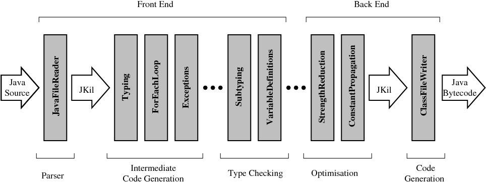
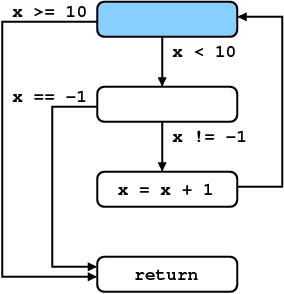
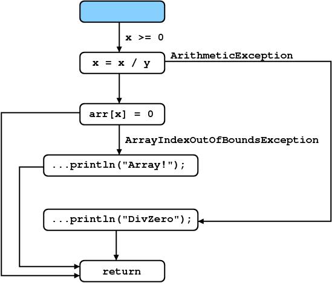

1. Introduction
The Java Compiler Kit is a straightforward implementation of a
Java compiler, designed with extensibility in mind. In building the JKit
compiler, my aims are: firstly, to help with teaching compilers by
considering one for a fully fledged language (Java), rather than a
stripped-down imitation language; secondly, to aid research in
programming languages, compilers and verification.
1.1 Pipelining
As is common in compiler design, JKit uses a (configurable)
staged pipeline for processing source files. The pipeline begings
by reading and parsing the source file into an intermediate
language called JKil; then, various stages are executed in a careful
manner to continue processing of the source file; finally, the file is
written out as a binary (which in this case, is a class file). The
following gives a pictorial overview of the pipeline which highlights
the most important stages:

Here, we can see, amongst others, the following important stages:
- Typing.
- This stage is responsible for computing the types of
expressions, and making explicit any otherwise implicit type conversion
that are required. For example, if variables
x and y
have type int then the expression x+y also
has type int.
- Subtyping.
- This stage is responsible for checking that expressions are
used correctly; for example, that we do not try to assign
null
to a variable with primitive type int.
- Variable Definitions.
- This stage is responsible for checking that a variable is defined
before it is used. This is a requirement of Java source code
(unlike for some languages, such as C), and enforcing it requires using
a dataflow
analysis called reaching
definitions.
The pipeline used in JKit is configurable --- meaning we can chop
and change which stages are executed as we wish. While this is not
particularly useful in the normal case, it is very helpful for several
reasons. When debugging, we can identify the source of errors by
preventing certain stages from running. And, when implementing different
language extensions (e.g. type inference), we can customise the
pipeline to suit our purposes.
1.2 Command-Line Interface
JKit provides a simple command-line interface, similar to javac.
In particular, the interface allows customisation of the pipeline stages
being employed, as well as the usual mechanisms for specifying the classpath
etc.
To see the command-line options available in JKit, simply run jkit
-help. A summary of the important options is provided below:
-verbose |
Print out debugging information, useful for diagnosing
problems |
|
|
-cp
-classpath |
Specify the class path for finding class files. |
|
|
-t file type
-target file type |
Write the output in a particular file format (e.g. -t
jkil to convert the source file into jkil, rather than bytecode). |
|
|
-ls
-liststages |
List the default pipeline stages used by JKit. |
|
|
-is stagename
-ignorestage stagename |
Ignore a particular stage when compiling. |
|
|
-ss stagename
-stopstage stagename |
Stop executing the pipeline at a particular stage, and
immediately write the output file (typically used in conjunction with
-t jkil). |
-lt
-listtargets |
Show the supported output file formats (by default, only .jkil
and .class) |
The following two examples illustrate the usage:
% jkit -ls
*.java:
>> jkit.io.JavaFileReader
jkit.stages.codegen.FieldInitialisation [Move field initialisation ...]
jkit.stages.codegen.Typing [Ensure types used correctly within ...]
jkit.stages.codegen.ForEachLoop [Breaks down Java 1.5 for-each loops.]
jkit.stages.codegen.Exceptions [Add exceptional edges to method ...]
jkit.stages.checks.Subtyping [Ensure types used correctly ...]
jkit.stages.checks.VariableDefinitions [Ensure variables are ...]
<< jkit.io.ClassFileWriter
% jkit -verbose -t jkil -is Subtyping Test.java
Parsed Test.java [391ms]
Loaded skeleton of Test
Loaded class Test
Applied stage jkit.stages.codegen.FieldInitialisation [16ms]
Loaded c:\Program Files\java\jdk1.5.0\jre\lib\rt.jar:java/lang/Object.class [203ms]
Loaded c:\Program Files\java\jdk1.5.0\jre\lib\rt.jar:java/lang/Byte.class [0ms]*
Loaded c:\Program Files\java\jdk1.5.0\jre\lib\rt.jar:java/lang/Comparable.class [0ms]*
Loaded c:\Program Files\java\jdk1.5.0\jre\lib\rt.jar:java/lang/Number.class [0ms]*
Loaded c:\Program Files\java\jdk1.5.0\jre\lib\rt.jar:java/io/Serializable.class [203ms]
Loaded c:\Program Files\java\jdk1.5.0\jre\lib\rt.jar:java/lang/Integer.class [0ms]*
Loaded c:\Program Files\java\jdk1.5.0\jre\lib\rt.jar:java/lang/Character.class [0ms]*
Loaded c:\Program Files\java\jdk1.5.0\jre\lib\rt.jar:java/lang/Short.class [16ms]*
Applied stage jkit.stages.codegen.Typing [422ms]
Applied stage jkit.stages.codegen.ForEachLoop [0ms]
Applied stage jkit.stages.codegen.Exceptions [0ms]
Applied stage jkit.stages.checks.VariableDefinitions [0ms]
Written Test.jkil [109ms]
Observe that, when specifying a stage to ignore, we only need to
provide a keyword, not the whole stage name; any stages matching that
keyword will be ignored.
2. Java Types
JKit provides classes and methods for representing and
manipulating Java types (such int, String[]
etc). The majority of these can be found in the jkit.core.Type
class. For example, the Type.Int class is used to represent
int types, whilst Type.Reference represents
general reference types, such as java.lang.String. Methods
are also provided for determining whether one type is a subtype of
another, finding the least upper bound of two types and generating JVM
descriptor strings.
2.1 Creating Types
For efficiency, the Type class provides a static
interface for creating Type instances (doing this enables
the flyweight
pattern). For example, to create a Type object representing
the Java type int, you simply call Type.intType().
Or, to create an array of booleans you would call Type.arrayType(Type.booleanType()).
We now outline the main Type classes available:
-
Primitives. Each primitive type (i.e. byte,
char, short, int, long,
float and double) has an appropriate Type.Xtype()
constructor.
-
Arrays. These are created using the methods Type.arrayType(Type)
(for uni-dimensional arrays) and Type.arrayType(int, Type)
(for multi-dimensional arrays). Given an Array object, one
can determine the element type via Array.elementType().
-
References. These consist of a package and one or
more (name,[type]) class pairs. For example, the reference type
java.lang.String consists of the package java.lang
and class pair ("String",[]). In contrast, the reference
type jkit.core.Type.Array is made up of the package jkit.core
and class pairs ("Type",[]), ("Array",[]).
Finally, the types component of the class pairs provides any
declared generic type variables. For example, the reference type
java.lang.HashMap<String,Integer> consists ot the package
"java.lang"
and class pair ("HashMap",[String,Integer]). Reference
types are created using the Type.referenceType() family of
methods.
-
Functions. These consist of a return type and one
or more parameter types. For example, the method int
f(String x) { ... } has a function type whose return type is int
and whose parameter type is String. Function types are
created using the Type.functionType(...) method.
The following code is provided as an example to illustrate the
usage:
import jkit.core.Type;
class Test {
public static void main(String[] args) {
Type.Int it = Type.intType();
Type.Array at = Type.arrayType(Type.booleanType());
Type.Reference rt = Type.referenceType("java.lang","String");
System.out.println("Types: " + it + ", " + at + ", " + rt);
}
}
% javac Test.java
% java Test
Types: int, boolean[], java.lang.String
Finally, there are several other Type classes not
listed here. For example, the class Type.Null is the
special type given to the null value, whilst Type.Void
is used to represent (among other things) void return types
for methods.
2.2 Subtyping
One of the key operations you can perform on Type
objects is Type.supsetEqOf(Type). This simply checks
whether the parameter object is a subtype of the receiver object
or not. For example, int is a subtype of long,
java.lang.String is a subtype of java.lang.Object
and java.lang.Integer is a subtype of java.lang.Number.
This method is used in numerous places in the JKit compiler, but most
notably in the Subtyping stage, where it is used to check
for syntax errors. For example, consider the following (erroneous)
method:
public void f(long x) {
int y = x;
...
}
This is checked for in the Subtyping stage by doing
something similar to the following:
void check(...) {
...
Type lhsT = ... // get type of left hand side
Type rhsT = ... // get type of right hand side
if(!lhsT.supsetEqOf(rhsT)) {
// This is a syntax error!
throw new InternalException(...);
}
...
}
2.3 Type Elements
TypeElements are roughly similar to Java's
annotations. Essentially, they allow is to extend Java's existing types
in a systematic manner. For example, in Java you can write the
following:
@Retention(RetentionPolicy.RUNTIME)
public @interface NonNull { }
class Test {
void f(@NonNull String) { ... }
}
Here, we have created a @NonNull annotation, who's
purpose is to further restrict reference types in Java such that
they cannot be null. In JKit, this would correspond to constructing a Type.Reference
object for java.lang.String, and supplying a @NonNull
type element.
NOTE: JKit's support for type elements remains incomplete,
and should be ignored for now.
3. Intermediate Representation
The JKit compiler does not, for the most part, operate on the
Java source language directly. This is because the source language is
rather cumbersome and complex. Instead, a simplified intermediate
representation is used. This reflects the Java source in many ways, but
is much closer to Java
bytecode. In particular, it does not have any structured control-flow
constructs (e.g. for loops); instead, it has only unstructured
control-flow based on branching (e.g. goto).
3.1 Statements and Expressions
The Abstract
Syntax Tree for statements and expresions is defined in the class jkit.core.FlowGraph.
Inner classes representing different aspects of the Java language are
provided there. For example, return statements are
represented by the FlowGraph.Return class, whilst binary
operators (e.g. +, - etc) are implemented by FlowGraph.BinOp.
The following tables outlines the grammar for statements and
expressions:
| Expr |
::= |
Value | LVal | UnOp | BinOp | Invoke | Cast | New | Exception |
|
|
|
| LVal |
::= |
LocalVar | Deref |
|
|
|
| Value |
::= |
BoolVal | CharVal | ByteVal | ShortVal | IntVal | LongVal |
FloatVal | DoubleVal |
|
|
|
| LocalVar |
::= |
Name |
|
|
|
| UnOp |
::= |
( '!' | '~' | '-' | '--' | '++' ) Expr | Expr ( '--' | '++' ) |
|
|
|
| BinOp |
::= |
Expr ('+' | '-' | '*' | '/' | '<<' | '>>' | '<<<' | '&' | '|'
| '^' | '&&' | '||' | '<' | '<=' | '>' | '>=' | '==' | '!=') Expr |
|
|
|
| Deref |
::= |
Expr '.' Name |
|
|
|
| Invoke |
::= |
Expr '.' Name '(' (Expr)* ')' |
|
|
|
| Cast |
::= |
'(' Type ')' Expr |
|
|
|
| New |
::= |
'new' Type '(' (Expr)* ')' |
Here, Name identifies valid variable, method and field
identifiers. Furthermore, LVal identifies those expressions which
are allowed to be on the left-hand side of an assignment statement
| Stmt |
::= |
Assign | Return | Throw | Invoke | New | Nop |
|
|
|
| Assign |
::= |
LVal '=' Expr |
|
|
|
| Return |
::= |
'return' (Expr)? |
|
|
|
| Throw |
::= |
'throw' Expr |
Note, the non-terminals above correspond to actual classes in FlowGraph.
For example, LocalVar is implemented by FlowGraph.LocalVar,
which contains a String field holding the variable name. A
simple sequence of statements in this language is the following:
x = z.method(1)
y = x * 2
In order to represent these statements in JKit, we must construct
instances of the corresponding classes in FlowGraph. For
example, objects representing the above sequence can be constructed as
follows:
import jkit.core.FlowGraph;
// First statement
FlowGraph.LocalVar x = new FlowGraph.LocalVar("x");
FlowGraph.LocalVar z = new FlowGraph.LocalVar("z");
ArrayList<FlowGraph.Expr> parameters = new ArrayList<FlowGraph.Expr>();
parameters.add(new FlowGraph.IntVal(1));
FlowGraph.Deref z_f1 = new FlowGraph.Invoke(z,"method",parameters);
FlowGraph.Assign s1 = new FlowGraph.Assign(x,z_f1);
// Second statement
FlowGraph.LocalVar y = new FlowGraph.LocalVar("y");
FlowGraph.BinOp x_2 = new FlowGraph.BinOp(FlowGraph.BinOp.MUL,x,new IntVal(2));
FlowGraph.Assign s2 = new FlowGraph.Assign(y,x_2);
Every expression Expr also has a type that identifies the
type of the value returned by that expression. For example, the type of
an FlowGraph.IntVal is int, whilst the type of
an FlowGraph.Invoke is determined by the return type of the
method being called. The type of an expression can be provided as an
optional argument to the class constructor. For example, to type a
simple addition of two integers would be as follows:
import jkit.core.FlowGraph;
FlowGraph.BinOp add1_2 = new FlowGraph.BinOp(FlowGraph.BinOp.ADD,
new IntVal(1),
new IntVal(2),
Type.intType());
Here, we can see that the binary operation is given the type int,
which is valid given that both its operands have type int.
Note that if no type is specified (as in the previous example), the
default any type is assumed (you can think of this as the unknown
type).
3.2 Flow Graphs
The intermediate representation used in JKit is based upon a control-flow
graph representation. This is a directed graph which connects statements
together according to the sequence they may be executed in the program.
For example, consider the following simple Java method:
void aMethod(int x) {
String r;
if(x >= 0) { r = "greater"; }
else { r = "smaller"; }
System.out.println(r);
}
void anotherMethod(int x) {
while(x < 10) {
if(x == -1) { break; }
x = x + 1;
}
}
These would be represented in JKit by the following control-flow
graphs:


Here the nodes of the graph are referred to as points.
Each flow graph must have a designated entry point, which is
marked above in blue. We can see that an edge may be labelled with a
condition which indicates it is only taken when that condition
holds. If no condition is given, the edge is always taken. Each point is
associated with a FlowGraph.Stmt or null (to
signal there is no statement which this point corresponds to). Note, it
does not make sense for a particular point to have more than one
unconditional edge coming from it; likewise, it doesn't make sense for
the edges coming from one point to have conditions that "overlap" in
some way.
Control-flow graphs are represented in JKit by instances of jkil.core.FlowGraph.
This extends the DirectedAdjacencyList class for
representing directed graphs, which in turn adheres to the java.util.Set
interface. Thus, flow graphs can be thought of simply as sets of edges,
where each edge is a triple (x,y,c) that goes from x to y
if condition c holds (which maybe null, if there is
no condition). Thus, for example, we can iterate the edges of a
control-flow graph quite easily as follows:
FlowGraph cfg = ...;
for(Triple<FlowGraph.Point ,FlowGraph.Point,FlowGraph.Expr> edge : cfg) {
...
}
The type information required by Java does get rather cumbersome,
however. Control-Flow Graphs can be constructed fairly easily by
creating instances of FlowGraph. For example:
// construct graph entry->p1->p2
FlowGraph.Point entry = new FlowGraph.Point(...);
FlowGraph.Point p1 = new FlowGraph.Point(...);
FlowGraph.Point p2 = new FlowGraph.Point(...);
FlowGraph cfg = new FlowGraph(entry);
cfg.add(new Triple(entry,p1,null));
cfg.add(new Triple(p1,p2,null));
Every flow graph maintains a list of the local variables used
within the statements and expressions of the flow graph. This list is
accessed via FlowGraph.localVariables() which provides, for
each variable, its type, modifiers, name and whether or not is a
parameter. For simplicity, local variables are scoped for the entire
flow-graph -- they cannot be scoped to a particular block as can be done
in Java source, for example.
3.3 JKil
JKit provides a textual representation of the flow-graphs, known
as the JKit Intermediate Language (JKil). This essentially
flattens the flow graphs using conditional branch and goto statements.
However, these are not real statements used inside JKit; rather they
correspond to the edges in the control-flow graph. For example, the
following control-flow graph:
Would be represented by the following JKil code:
void aMethod(int x) {
String 4r;
L0:
if (x[int] >= 0[int])[boolean] goto L1
4r[java.lang.String] = "smaller"[java.lang.String]
goto L2
L1:
4r[java.lang.String] = "greater"[java.lang.String]
L2:
java.lang.System.out[java.io.PrintStream].println(4r[java.lang.String])[void]
return
}
From this, it becomes apparent that JKil is somewhat closer to
Java bytecode than Java source, which is certainly the intention! Note
that, the type determined for each expression is written inside square
braces. While this can become rather difficult to read, the idea is that
it helps debugging the various pipeline stages used in JKit.
To obtain the JKil representation of a Java program, simply run
JKit with the command-line switch -t jkil which causes JKit
to create a .jkil file, rather than a .class
file.
3.4 Exceptions
Exception handling is also done within the flow graph
representation using so-called exceptional edges. An exceptional
edge runs from a point that may generate a particular exception to the
entry point of the corresponding handler (if there is one). Thus, the
following code:
void aMethod(int x, int y, int[] arr) {
try {
x = x / y;
arr[x] = 0;
} catch(ArrayOutOfBoundsException e) {
System.out.println("Array!");
} catch(ArithmeticException e) {
System.out.println("DivZero!");
}
}
Would be represented by the following flow graph:

Here, we can see the exceptional edges marked with the exception
they represent. Finally, if there is no appropriate handler within the
method, then no exception edge will be included in the flow graph. This
may change in future releases
4. Classes, Methods and Fields
Representations of classes, methods and fields are provided in
JKit through the classes jkit.core.Clazz, jkit.core.Method
and jkit.core.Field. These provide various important pieces
of information about the item in question and, most importantly, provide
access to the hierarchical structure of classes in Java.
4.1 Classes
The class jkit.core.Clazz is one of the most
fundamental in JKit. For any class being compiled, or loaded from the classpath
an instance of Clazz is provided. With this, the user can
iterate the various methods, fields and inner classes provided in the
class, as well the interfaces it implements and the super class it
extends. Other information, including the full generic type of the
class, any modifiers (e.g. final) on the class and the name
of the class is also available. Users can also add methods or fields to
existing classes and/or construct their own from scratch. The following
illustrates the general usage with an example that removes a method with
a particular name from a given class (if it exists):
void remove(String name, Clazz clazz) {
for(Method m : clazz.methods()) {
if(m.name().equals(name)) {
c.methods().remove(m);
break;
}}}
The constructor for a class is a method whose name matches the
class in question. Static constructors (for static blocks)
are given the special name clinit, although this will
probably change in the future!
4.2 Methods and Fields
Methods are represented in JKit by instances of the class jkit.core.Method.
This contains information about the method, including its modifiers
(e.g. public, static, etc), its type (which is
an instance of Type.Function), any exceptions it throws
and, of course, the flow graph making up the method's body (if there is
one). The following illustrates code to check whether a given method has
a void return type or not:
void boolean hasVoidReturnType(Method m) {
Type.Function ft = m.type();
return ft.returnType().equals(Type.voidType());
}
Fields are likewise represented in JKit by instances of the class
jkit.core.Field. This contains information about the field,
including its modifiers (e.g. final, private,
etc) and its type.
4.4 Class Table
The class jkit.core.ClassTable is also an important
class within JKit. This provides a way for the user to locate a Clazz
instance, given its name or type, by first checking if it is located in
memory already and, if not, loading it from disk by searching the classpath.
Other important methods include the family of ClassTable.resolveMethod(...)
methods and, likewise, for ClassTable.resolveField(...).
These methods search the class hierarchy from a given class looking for
an appropriate method/field matching the name and types given. The
algorithms involved here are somewhat complex, and full details of how
they work can be found in the Java
Language Specification. Example code which illustrates the use of ClassTable
to find a method with a given name that accepts no arguments is given
below:
Method findMethod(Type.Reference owner, String methodName) {
ArrayList<Type> parameters = new ArrayList<Type>(); // no parameters
try {
Triple<Clazz,Method,Type.Function> minfo;
minfo = ClassTable.resolveMethod(owner,methodName,parameters);
return minfo.second();
} catch(ClassNotFoundException e) {
...
} catch(MethodNotFoundException e) {
...
}
}
Here, we can see that resolveMethod returns a triple
(owner,method,type), where the owner identifies the class
containing the method, the method gives access to the instance of
Method representing the method and, finally, the type
gives access to the fully substituted method type. The latter may seem
redundant, since we can access type information from Method
directly. However, this is not the case, since generic type substitution
comes into play here. For example, suppose we have the following
classes:
class Parent<S,T> {
S f(T x) { ... }
}
class Child<T> extends Parent<String,T> {
...
}
Now, suppose we have a variable x with type Child<Integer>
and we wish to check whether the call x.f(y) is valid.
Calling ClassTable.resolveMethod(...) will give us the
triple (owner,method,type) for Parent.method().
Examining the type information provided by Method.type()
yields S f(T), which is insufficient to perform our check.
On the other hand, the type returned will be String
f(Integer) which has the generic type arguments substituted
appropriately.
5. Code Generation
5.1 Java Bytecode
The Java
Virtual Machine Specification describes in detail the class file format,
including the Java bytecode instruction set. Here, only a brief
introduction to Java bytecode instructions will be given.
In Java bytecode, a method is made up of a series of bytecode
instructions. These instructions have access to a fixed-size local
variable array, as well as a stack of known maximum depth. For example,
consider this simple Java program:
class Test {
public int f(int x) {
int y = x * 2;
return y + x;
}
}
We can compile this into a class file in the usual way as
follows:
% javac Test.java
Now, we can view its bytecode instructions using javap
as follows:
% javap -verbose Test
...
public int f(int);
Code:
Stack=2, Locals=3, Args_size=2
0: iload_1
1: iconst_2
2: imul
3: istore_2
4: iload_2
5: iload_1
6: iadd
7: ireturn
LineNumberTable:
line 5: 0
line 6: 4
}
Here, some of the output from javap has been omitted
for brevity. We can, however, see that the method f(int)
has: a local variable array of size 3; a stack of maximum depth 2; and,
accepts 2 arguments (the first of which is the special this
variable).
The bytecode instructions for method f(int) are also
visible above. These are a straightforward translation of the original
Java method. For example, the instruction iload_1 loads an
integer value from index 1 in the local variable array (which
represents the parameter x) and places it onto the stack.
Likewise, the iconst_2 instruction places the integer
constant '2' onto the stack. At this point, the instruction imul
takes two integer values off the stack, multiples them together and
places the result back onto the stack. The remaining bytecode
instructions operate in a similar manner, and their full semantics are
given in the
The Java Virtual Machine Instruction Set .
Invalid Bytecode!
Constructing an invalid sequence of bytecode instructions is very
easy to do! For example, the following bytecode sequences are all
invalid for different reasons:
public int f(int);
Code:
Stack=1, Locals=3, Args_size=2
0: iload_1
1: iconst_2
2: imul
Here, the maximum depth of the stack is exceeded.
public int f(int);
Code:
Stack=2, Locals=3, Args_size=2
0: iload_1
1: imul
Here, the stack holds insufficient elements for the imul
instruction.
public int f(int);
Code:
Stack=2, Locals=3, Args_size=2
0: iload_1
1: iconst_2
2: fmul
Here, the fmul instruction expects two floating-point
values on the stack, but is given two integer values.
5.2 Flow Graph Flattening
5.3 Expression Flattening
5.4 Boolean Expressions